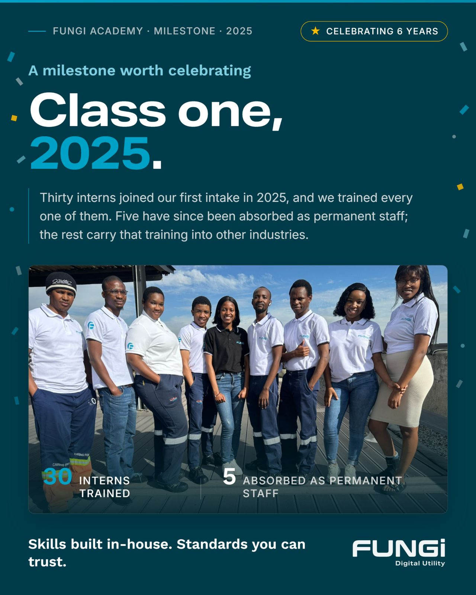
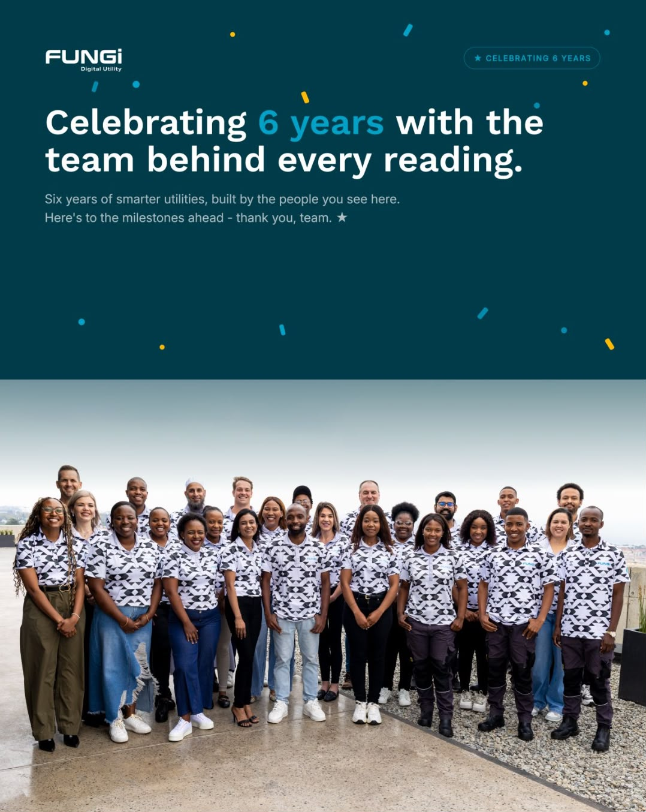

Fungi Academy is our own training academy — open to you, funded by Fungi, and delivered online so it fits around your work. AI is where we started, and our catalogue now runs to 800 qualifications and courses across every part of the business.
SAQA runs South Africa's National Qualifications Framework. QCTO designs and quality-assures occupational qualifications, and accredits the providers allowed to deliver them.
That chain is why an accredited certificate counts outside Fungi too — with another employer, or towards further study. See which courses carry it
Up to now this academy has been about AI. That was the starting point, never the destination.
We've just taken on a catalogue of 800 qualifications and courses — technical, business, compliance, safety, admin. Whichever part of Fungi you work in, there is now something here aimed at your actual job, not only at the parts of it that touch AI.
The deal doesn't change: online, funded by Fungi, fitted around your shift. Start with what your job needs today, and use the Skills Gap check if you're not sure where that is.
See what's opened upOur People, Our Greatest Asset.
Six years in, our biggest asset has never been the meters or the software — it's the team behind every reading. This academy is our commitment to keep investing in that team, whatever your role and whatever your starting point.
Every course is fully funded by Fungi. Everything is online, so it works around your shift and your site. And what you come away with is yours to keep — it stays with you, wherever you go from here.
Have a look through the courses, talk it over with your manager, and register your interest. I'd like to see all of us on this list.
Fungi Academy exists so all of us can keep pace — practical online training built around the work we actually do. No technical background required, whatever role you're in today.
The catalogue spans technical, business, compliance, safety and admin — so this isn't only for the people whose jobs already touch AI. Whatever you do here, there's something aimed at it.
Every course is grounded in the work we actually do — metering, field operations, billing and support — so what you learn this week you can use next week.
Study from any Fungi site or from home. Flexible online delivery means no travel, no lost shifts, and training that fits around operational duties.
A sample of what's live on the site today. The full catalogue runs to 800 — if what you need isn't here yet, ask HR. There are also free international courses from Google, Microsoft and Coursera you can start this evening.
A practical introduction to AI for non-technical staff — what it is, how it works, and how to use everyday AI tools confidently and responsibly.
Hands-on training in the AI tools transforming day-to-day work — writing assistants, research tools, data tools, and workflow automation.
Using AI safely at work: data privacy, accuracy, bias, and the practical do's and don'ts of AI in a professional setting.
For Fungi managers and team leads: spotting AI opportunities in your department, leading AI-enabled teams, and driving responsible adoption across the business.
Explore how AI is enabling new business models and entrepreneurial opportunities across Africa's growing digital economy.
The full technical qualification — computer systems, hardware and support, covered properly. The formal route for our technicians and field teams.
Class one came through in 2025 — thirty interns trained, five now permanent Fungi staff. Six years on, this is the team behind every reading, and the academy is how we keep building it.


Register your interest with HR and we'll confirm your place on the next intake.
Upskill Yourself